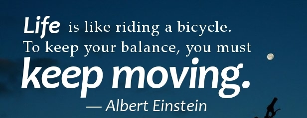

B E L L S P I R A T I O N
Niko od nas neće odavde izaći živ!
Zato vas molim prestanite prema sebi se ponašati onako kako vam drugi nameću.
Jedite tu ukusnu hranu, šetajte po suncu, skočite u more.
Recite istinu koju nosite u svom srcu poput blaga.
Budite blesavi.
Budite ljubazni.
Budite čudni.
Nema vremena nizašta drugo!
Svakoga se dana iznova uvjeravamo kako je malo toga nemoguće postići, ako su ljudski duh i tijelo spremni prihvatiti određenu žrtvu.
Bilo da savladava neki vlastiti hendikep, pokušava pomaknuti granice ili jednostavno živjeti u malo boljem svijetu, čovjek će naći način da to i učini.
Šta god da mislite privućićete u svoj život. Ne ono što želite, već ono u šta ste se emotivno uključili!
Sreća ne zavisi od toga šta imate ni od onoga ko ste, ona se isključivo oslanja na ono šta mislite!
Ipak, ponekad ju je potrebno malo pogurati, dati joj zdravog poticaja i otvoriti joj oči, a ako ne želite na svojoj koži osjetiti taj, ponekad vrlo neugodni ‘poziv na buđenje’, najbolje je pročitati, poslušati ili pogledati neki motivirajući,
inspirativni govor.
